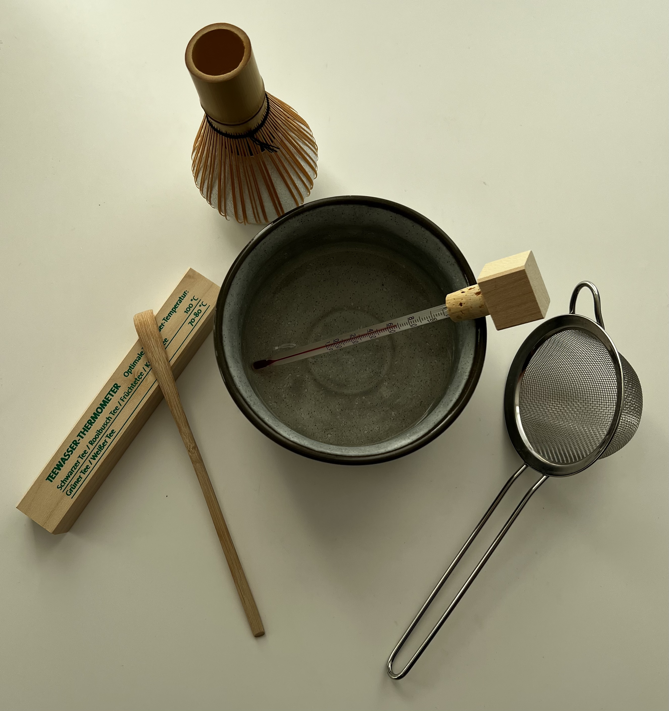
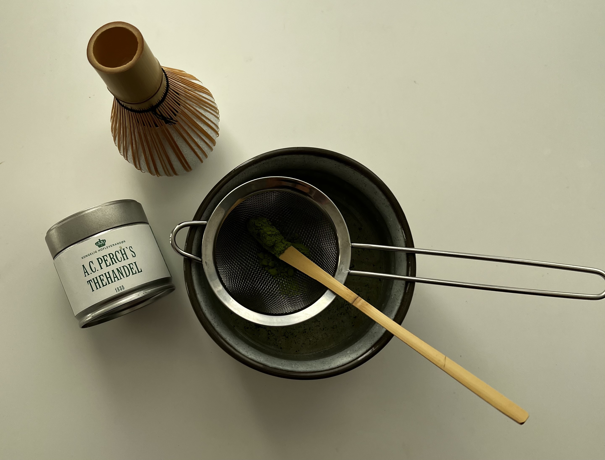
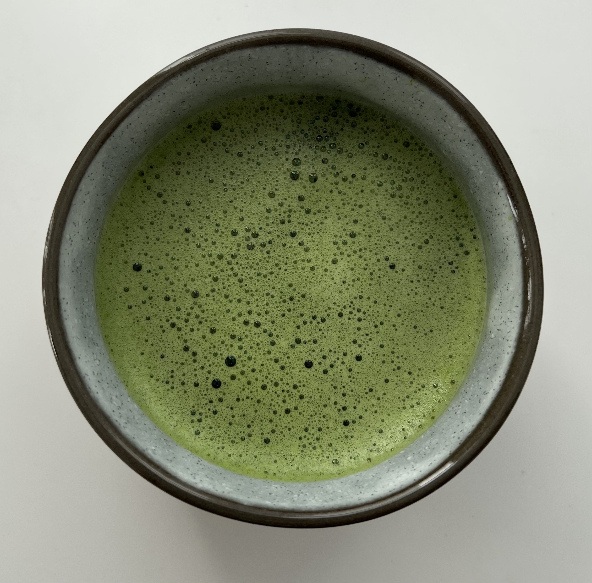

Trin 1
Start med at koge noget vand, lad det stå og køle af til 70 grader. Hvis du ikke har et termometer kan du lade det køle af i 5 min.
Trin 2
Find din skål og si frem, tag 2 matcha måleskeer matcha op i sien. Hvis du bruger en theske, så bruger du 1 theske uden for meget top på. Brug skeer til at få matchaen fordelt i skålen gennem sien.
Trin 3
Tag dit varmet vand, og hæld vand i så det dækker bunden. Tag nu dit piskeris og pisk matchaen. Pisk godt så der ikke er matcha klumper i bunden.
Trin 4
Kom mere vand i skålen. Herefter er matchaen klar til at nyde.
